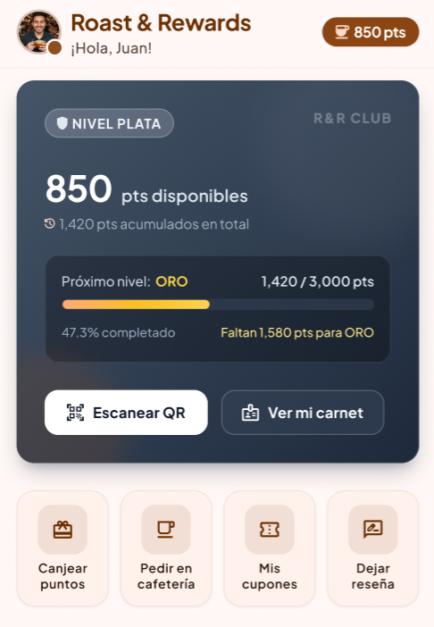

Alan Beltrán
Desarrollador Full Stack
Sobre mí
Soy desarrollador Full Stack con experiencia en el desarrollo de APIs robustas con Java, Spring Boot y Spring Cloud, aplicando buenas prácticas. En el frontend trabajo con Angular para construir interfaces dinámicas y consumir servicios REST. Mi perfil se complementa con el manejo de persistencia de datos en bases de datos relacionales como MySQL y con herramientas esenciales como Docker y Git. Además, estoy sumando Spring Cloud a mi stack para desarrollar arquitecturas de microservicios. Estoy finalizando la carrera de Técnico Universitario en Programación y sigo capacitándome por cuenta propia
Proyectos
Sistema que centraliza el control de stock y ventas de múltiples cafeterías asociadas a una misma API, junto con un sistema de afiliados para que nuevas cafeterías se sumen a la red. Permite gestionar productos, inventario y ventas de cada local de forma independiente pero conectada a una misma plataforma central, facilitando la escalabilidad a medida que se suman nuevas cafeterías afiliadas. Desarrollado con Java y Spring Boot, con Spring Security y autenticación JWT para proteger los endpoints según el rol de cada usuario, Postman para el testing y documentación de la API durante el desarrollo, y Docker para el empaquetado y despliegue.

Sistema de gestión de turnos pensado para profesionales independientes (como consultorios, estudios o talleres) que necesitan organizar la agenda de sus clientes sin depender de planillas o WhatsApp. Permite crear y administrar turnos, gestionar disponibilidad horaria y manejar usuarios con autenticación segura, todo expuesto a través de una API REST documentada. Desarrollado con Java, Spring Boot 4.1 y Spring Security con autenticación JWT, usando MySQL como base de datos y Flyway para las migraciones, MapStruct para el mapeo entre entidades y DTOs, Docker para el empaquetado y despliegue, y Swagger/OpenAPI para la documentación de la API.
Plataforma para administrar el stock de vehículos, ventas y clientes de una concesionaria automotriz. Permite registrar unidades disponibles (nuevas y usadas) con sus datos técnicos y estado, gestionar el proceso de venta desde la consulta hasta la entrega, y llevar un registro de clientes y vendedores asociados a cada operación. Pensado para escalar a múltiples sucursales, centralizando el control de inventario y ventas en una misma plataforma. Está construido sobre una arquitectura de microservicios, donde cada módulo funciona como un servicio independiente que puede desarrollarse, desplegarse y escalarse por separado.

Tecnologías y herramientas
Backend


Frontend


Herramientas